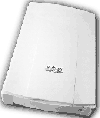
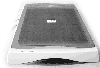

|
|
| 当前位置：电脑报电子版 > 1999 年 > 50 期 > 评测与市场 > 家用扫描仪，五英论英雄 |
| 《 家用扫描仪，五英论英雄 》 |
| 在计算机领域，扫描仪已经成为继打印机之后最重要的外部设备。特别在欧美等发达国家，扫描仪在计算机用户中已达到15％的的惊人占有率。随着越来越多的软硬件厂商的介入，扫描技术的不断进步，扫描仪开始进入普通百姓家庭。现在的扫描仪不再是图形工作者的专用品了。1999年“清华紫光”的以旧换新活动更是掀起了一阵扫描仪的降价狂潮。面对汹涌澎湃的扫描仪浪潮，我们电脑报评测室挑选了市场上反映良好的五款中低档扫描仪，进行了全面系统的评测，帮助读者了解扫描仪的相关知识，认识优良产品，从而做出自己的选择！
扫描仪的主要参数 1） 扫描的幅宽。一般适用于家庭用户的扫描仪的扫描幅宽都是A4或篇幅稍微宽一些的A4加长型，有些高档扫描仪的扫描篇幅可以达到几张A4篇幅，不过价钱却成倍数上升，只有那些财大气粗的专业图像处理公司才会需要！2） 扫描分辨率。扫描分辨率代表扫描仪的不同档次。光学分辨率和机械分辨率是不同的概念，光学分辨率指的是扫描仪上的感光元件CCD或CIS每英寸能捕捉到图像的点数；机械分辨率指的是带动感光元件的步进马达在机械设计上每英寸移动的步数。一个完整的扫描过程是由感光元件扫描完原稿的第一条水平线后，再由步进马达带动感光元件移动到第二条水平线。一台300×600dpi的扫描仪表示该机器以300dpi光学分辨率为横轴，以600dpi机械分辨率为纵轴。另外扫描仪还有一个所谓的最大分辨率，就是将感光元件所扫描到的图像资料通过数学上的插值算法补充额外的像素，让像素过渡更为合理。这就是300dpi的扫描仪可以具有4800dpi的最大分辨率的原因。合适的插值算法可以有效提高图像质量，但过份的增多插值像素只会使图像数据量急增，增加计算机的负担。 3） 色彩位数。色彩位数代表扫描仪能够还原实物原有色彩的多少。入门级的以24/30bit为多，而中高档的产品都多提供36bit的色位，36bit的扫描仪R，G，B三种透镜的颜色深度各为12bit（即4096级色阶），已经远远超过目前通用PhotoShop的8bit处理能力 。 4）扫描仪的接口。现今产品有三种接口：EPP并口、SCSI、USB。EPP并口连接简单，几分钟内可以将扫描仪安装完毕，可以不用打开机箱，是品牌微机方便型电脑的良好选择，一般EPP的扫描仪会提供一个接打印机的接口，缓解LPT1的紧张状况。SCSI接口宝刀未老，以其优异的性能为很多高档扫描仪所采用，它的优点是速度快而且不占用并口资源，可是安装略显复杂。USB是新型的接口，具有较为广阔的前景。 5）扫描元件。扫描元件有CCD和CIS两种，CIS采用接触式扫描，对于单张的照片和单页纸张的扫描效果较好，并且具有耗电量小，轻薄等优点，但由于是出现不久，CIS技术尚有不成熟的地方，对于不平整的稿件效果就不如CCD。 扫描仪性能测试方法 为了测试扫描仪，我们准备了以下几个测试样本，测试扫描仪不同的参数。色标卡样本：选择AGFA公司，编号为C70545XX 的IT8彩色标准色标卡，具有标准的纯黑和纯白区域，22级灰度梯尺，独立的CMYK和RGB梯尺，梯尺深度从A到L。在测试时，首先在PhotoShop软件中扫描该样本，扫描参数选择默认值。利用PhotoShop中的Eyedropper功能读出纯黑和纯白区域的RGB值。理论上讲，纯黑处RGB三色值应该全为0，纯白处RGB值应该各为255，实测结果越接近理论值，说明扫描仪的色彩保真性能越好，扫描仪的色彩动态范围越大；三色值越平均，扫描仪的透镜光学精度就更统一，透镜色彩偏差越小。另外，即使在同一个颜色区域，不同的点会有不同的RGB色值，故取中心三个点平均值。检查扫描结果中22级灰阶的解析程度，扫描仪应该可以分辨出全部22级灰阶。 精度测试样本：该样本在A4光面纸四边绘有RGB小方块，从左上角至右下角有一条斜线可以观察感光元件排列的连续性，步进马达的走位精度及均匀性。1）在测试时，选择默认参数进行扫描。结果放大若干倍观察斜线部分是否有断线现象，2）斜线周围有水平及垂直直线，体现出扫描仪在水平方向上的均匀性。理想的情况是：清晰程度完全一致。但是由于透镜折射的原因，中间部分的清晰度会高于两边。如果出现间隔性的模糊或者中间部分模糊是无法解释的，出现这种现象几乎可以肯定存在质量问题。 人物照片样本：照片是一张人物头像，观察扫描结果对人物面部皱纹、发丝和明暗的表现，可以体现扫描仪对细节的表现力和色彩丰满程度。人物粉红色皮肤，可以较为满意地检测扫描仪对颜色的还原程度，头部阴影处的过渡，对扫描仪光学性能的敏感程度提出了考验！ OCR样本：中文报纸样本、中英文喷墨打印样本。中文报纸样本中文字450个，没有英文字符。中英文打印样本中，中文和英文各占一半篇幅。在进行针对报纸文稿OCR识别测试时，大多数扫描仪须要调整对比度和亮度参数。打印中英文样本，一般使用默认扫描参数就可以达到很好的识别效果。有些扫描仪捆绑的OCR软件，支持中英两种文字的识别，比如TH－OCR、紫光OCR等；另外，有一些扫描仪捆绑的OCR仅支持中文识别，例如尚书OCR、蒙恬OCR等。在后一种情况下，扫描仪会搭配一个诸如TextBridge的西文OCR软件。 速度测试样本：一张A4幅面的彩色图片，测试时计算从点击“扫描”按钮开始，到图片完全出现在PhotoShop中为止的时间。选用彩色600dpi, 主要由接口及扫描仪数据的编码方法决定，采用扫描仪内置处理器进行编码计算的扫描仪速度要快于采用软件算法的扫描仪。 扫描仪的测试表现 Uniscan 6C Uniscan系列是清华紫光的产品。Uniscan 6C在色标卡的测试中。它的表现较出众，RGB值在纯黑处全部为0、0、4；纯白处RGB分别为：245、247、249。从数值来看，在纯黑处的B（Blue）数值稍重，中间过渡阶段RGB各值也都很平均，色彩还原很不错，没有产生偏色的情况，并可分辨出测试样本中全部22级灰阶。在测试步进马达的精度方面，在放大过后，可以看到斜线浓度均匀，也就是说，感光元件CCD排列致密均匀，步进马达走位精确。看起来Uniscan 6C在机械设计及加工方面已经解决了困扰扫描仪精度的问题。照片样本中的表现，Uniscan 6C同样出色，较好地保留样本的细节，色彩还原很不错。扫描照片样本时显得颜色略深，但从整体效果上看还是不错，尤其是在明暗对比和色彩捕捉的动态范围方面表现突出；在高亮部位的色彩还原很鲜艳、清晰，表现出很强的渲染力。在OCR识别率测试中，紫光OCR软件作为它的汉字识别工具，中文、中英文文稿的平均错字率分别为： 4/450、11/900，已经非常令人满意了。在速度的测试中，从扫描开始到结束，费时85秒，表现只能算中上游。 另外，该产品还具有低噪音的硬件设计、典雅的外形和紧凑的结构，其功能强大的人性化扫描软件使普通用户可以轻松地驾驭扫描仪。这是紫光扫描仪一贯特点，也许是其广泛深入人心最重要的一点。为避免扫描仪在搬运过程中光学组件受损害，Uniscan 6C还设有保护开关，但在使用前必须先打开此开关。为提醒用户注意，公司特意在该扫描仪顶盖上贴了张提醒标签，考虑得还挺周到。 Uniscan 1236U Uniscan 1236U与Uniscan 6C简直就是一个模子里做出来的，大家可以从照片上看到。不同的地方只是体现在与计算机连接的接口上：Uniscan 6C采用EPP接口，还附带一个可以连接打印机的EPP接口；Uniscan 1236U却是采用的USB接口。两种产品的捆绑软件也是一模一样。从测试表现来看，二者表现基本一致，差别很小。Uniscan 1236U的测试速度与Uniscan 6C相比有一定优势，费时75秒，看来，决定扫描仪速度的关键因素除了扫描仪本身的微处理器速度及编码方法之外，外部接口也有明显的影响。Uniscan 1236U由于是USB接口，可以有效的解放计算机的打印口，与目前广泛采用USB接口的外设潮流一致。Microtek Scanmaker 3600 作为在业界拥有重要影响力的扫描仪厂商，Microtek其软硬件的研发力量都是比较强大的。就Scanmaker 3600 扫描仪本身而言是一款不错的产品，外形漂亮，体现了该厂结构工程师对于审美心理的研究能力。自主开发的ScanWizard 5特别针对个人及家庭用户而设计，安装和使用都很简单，为新用户提供友好的使用界面。具有“Scan”、“Copy”和“Email”功能，快捷简单，新颖！从附带的附件来看，东西不少，但乱糟糟的塞到了一个塑料口袋里，好像与产品本身不错的形象不协调。Scanmaker 3600主要面向办公室及个人家庭。Scanmaker 3600影像感应元件为彩色线性 CCD 及冷阴极灯管。在色标卡样本测试中，Scanmaker 3600的RGB值在纯黑处为4、0、7，纯白处在250左右。相邻灰阶段RGB各值过渡也都很均匀，并可分辨出测试样本中22级灰阶，其动态范围是我们这次测试中表现最出色的。Scanmaker 3600对照片细节的表现效果较好，能将样本的原貌清晰地展现出来，人物金色发丝被比较理想地体现出来，很有专业扫描仪的特色，色彩还原方面确实有其独到之处。在进行的OCR中文识别测试中，识别错字率为 5/450 ，中英文打印文稿的识别错字率为14/900，步进马达的精度测试样本扫描结果水平均匀。斜线连续无间断，扫描速度给人印象深刻。在全彩色模式下扫描A4幅面的彩页，耗时只有70秒，动作麻利，马达的轻微响声听起来很悦耳。 尽管其软件人性化设计已经较友好，不过，对于初学计算机的用户来说，这种友好的程度还不够。从较为专业的角度来看，Scanmaker 3600还是很不错的。 Targa TS12MU  Targa TS12MU是深圳信利华公司的产品。由于采用CIS感光元件，外形给人的感觉简洁轻薄，从所附带的软件来看，Targa TS12MU只有一张光盘，不过就是这一张光盘包括了实用的驱动程序及操作软件，其外包装也很简洁实在。Targa TS12MU最出众的地方是扫描仪本身不要额外的电源设备，与外部设备连接的接口只要一条USB线缆，软硬件安装非常的简单，是我们这次测试扫描仪中最轻，最薄的产品。扫描时步进马达的声音几乎听不到，操作软件也可以用一个简单来概括，全中文界面绝对让你感觉扫描图片是一件很轻松愉快的事。在性能测试中，Targa TS12MU表现都一般，没有特别优秀的地方。这可能就是这款产品的设计思想：够用就行，越简单方便越好。Genius Color－page vivid pro Ⅱ film Genius vivid pro Ⅱ film在外形上并没有什么抢眼的地方。接口属于EPP接口，还带一个连接打印机的接口。这款扫描仪的上部盖板与下部的底座电源相连，就是说，如果需要，盖板可以发出灯光，进行底片或者胶片的扫描，这点应该算该产品的闪亮点。人物头像的扫描是察看扫描仪的细节表现程度，从较细微的胡子茬、皱纹的深浅分支、细头发丝的连续与否等方面来评价扫描结果的好坏。vivid pro Ⅱ film扫描表现既不突出也不落后，效果表现算是比较好。从图片观察马达精度，可以看出该产品表现不错。 打印样本扫描后的打印效果比较好，尤其是英文的打印效果，字体边缘几乎看不到毛刺，笔力也基本均匀，没有扭曲的现象。扫描效果在水平方向上比较均匀的，两边的扫描效果与中间无甚差别。所以在纯白处的RGB值分别为245、247、249说明白色的表现是很不错的；但是黑色的表现就差了一些，纯黑处的RGB值均为15左右，应该为0是最好，有些偏向青色。 结束语 通过上面对这五款市面上流行的中低档扫描仪的评测和相关知识的介绍，相信大家 对扫描仪的各项性能都有了个大致了解，希望各位读者买到适合自己的扫描仪。 |
| 下载本期推荐软件 | 页 首 |
| CPCW网站版权所有，电脑报网站编辑部设计制作发布 |
{kind=link}